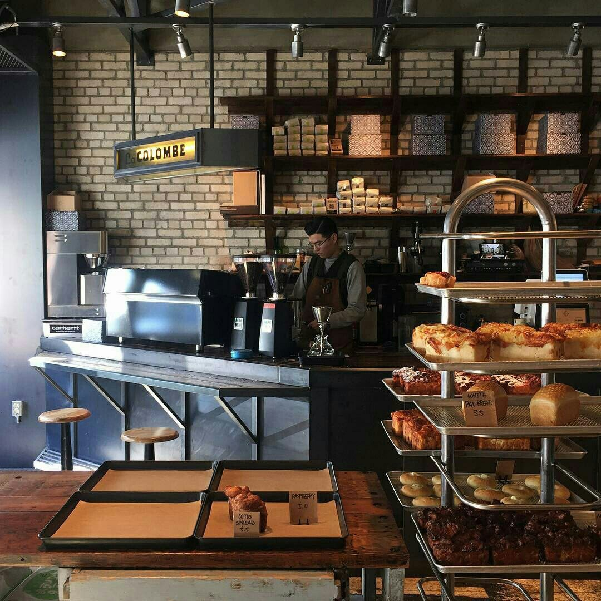

Ambiente acogedor

Café de calidad
Disfrutaras cada grano de café en un ambiente tanquilo.
Disfrutaras cada grano de café en un ambiente tanquilo.
Disfruta de un momento de relajante con nuestras bebidas calientes. !Pruébalas y compruébalo tú mismo¡...
Ver más¡Ideal para combatir el calor! ¡Date un gusto y refréscate con nosotros! Disfruta de nuestra selección de bebidas frías...
Ver másEl cultivo de nuestro café sigue métodos tradicionales que se han transmitido de generación en generación. Una vez que los granos de café están secos, están listos para tostarlos y prepararlos. Pero antes de que lleguen a su taza, se someten a una ronda final de control de calidad para garantizar que solo se envíen al mercado los mejores granos. El café orgánico de Chiapas se considera como el mejor del mundo gracias a su excelente calidad, lograda por el tipo de tierra que lo ve nacer. La especie que se cultiva en Chiapas es la Coffea Arábica, que entre los distintos tipos de café,es muy apreciada entre los amantes de la aromática bebida.